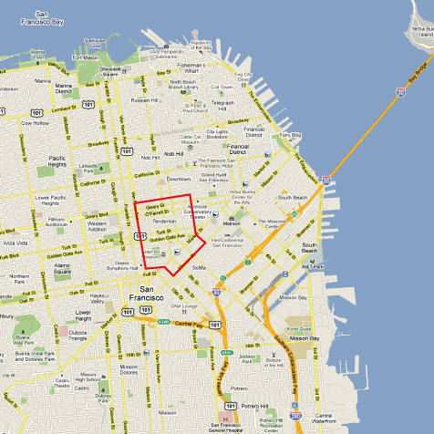

Sogeti goes to Java One 2012
Nationell Java / Open Source driver Eva Lund (Umeå)
Java på Sogeiti, inte bara Umeå!
Henrik Jaakkola (Borlänge)
Men också Umeå
Robert Olsson
San Francisco
Silicon Valley, när du tror att dig vara där är du bara halvvägs!
Union square, Fisherman's wharf och Market
Tenderloin
 The Tenderloin is a high-crime neighborhood, particularly violent street crime such as robbery and aggravated assault.Java One, 40K+

- Inte på Moscone center
- Hilton
- Park 55

Mark Reinhold, Chief Architect of the Java Platform
Londons Java User Group
Bruno Souza, Brasilien Java User Group
Content is king
More Than Skin-Deep: JavaServer Faces 2.2 Foundation and PracticeJava Strategy Keynote
JavaOne Technical Keynote
Do You Really Get Class Loaders?
Interactive Onstage Java EE Overengineering
Pimp Your Productivity with Git, Gerrit, Hudson, and Mylyn
The Arquillian Universe: A Tour Around the Astrophysics Lab
Project EASEL: Developing and Managing HTML5 in a Java World
Open Source Identity and Access Management Expert Panel
Community Driving the Future of Java: Adopt a JSR
Scalable Java Apps for Cable: Lessons from the Trenches
Web Framework Smackdown 2012
Introduction to the Play Framework
Amazon Web Services for Java Developers
I Got 99 Problems, but REST Ain’t One
Scala Tricks
The Modular Java Platform and Project Jigsaw
Best Practices in Java Enterprise Monitoring
Custom Static Code Analysis
Java PaaS: The Engine for Delivering Enterprise and Mobile Applications
Making Apps Scale with CDI and Data Grids
What’s What in NoSQL?
What’s New in Scala 2.10
What’s New in Groovy 2.0?
Improve Your Java Code, Functional-Style—Now!
Java Community Keynote
Stress-Testing Java EE 6 Applications Without Stress
The Groovy Ecosystem
Putting the Metaobject Protocol to Work: Nashorn’s Java Bindings
How Scala, Wicket, and Java EE Can Improve Web Development
Vad är av intresse i efterhand
- Java Strategy keynote
- Community keynote
- Lambda
- Web Socket
- Nästan alla föreläsningar ligger online
Om ni vill kolla in vad vi tyckte var det bästa materialet och de intressantaste länkarna så finns det listat på intranätet.
KO: Java / Open Source
- 28 / 11 - GIT, Eclipse Mechanics och Certifiering med @jkpgjug
- 05 / 12 - Domain Driven Design med Jönköping Developer Dojo
- Intern agenda någon ?